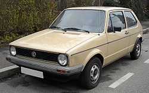
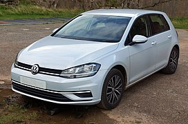
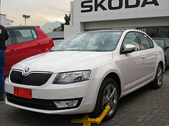
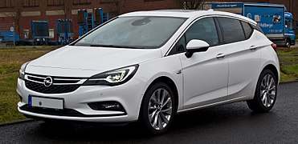
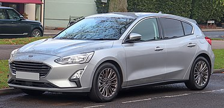
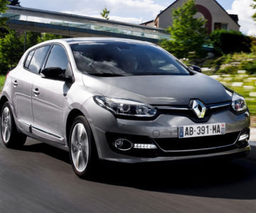

headder
C-клас
C-клас є третім найменшим в європейській класифікації легкових автомобілів, який описується як "середні автомобілі". Це еквівалентно категорії "малий сімейний автомобіль" у Euro NCAP, і категорії компактних автомобілів у Сполучених Штатах і Великій Британії. У 2011 році C-клас мав частку європейського ринку в 23% .
Визначення
Європейські класи не ґрунтуються на критеріях розміру або ваги. На практиці автомобілі C-класу описуються як такі, що мають довжину приблизно 4,5 метри. Найбільш поширеними стилями кузова для автомобілів C-класу є хетчбеки, седани та універсали.
Поточні моделі
У п'ятірку найбільш продаваних автомобілів C-класу в Європі входять Volkswagen Golf, Škoda Octavia, Opel Astra, Ford Focus та Renault Mégane.
    

© Powered by Igor Khodachok 2020